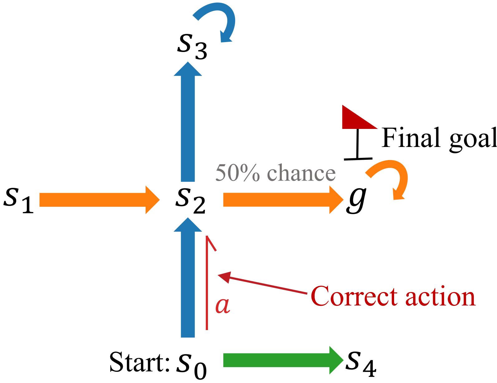
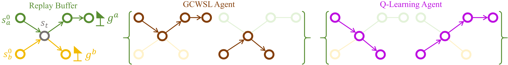

👋About Me
Hi, I am Xing Lei (雷星), a Ph.D. student in Artificial Intelligence at the School of Artificial Intelligence, Xi'an Jiaotong University (2020–present). I received my M.S. in Software Engineering from Xi'an Jiaotong University (2019) and my B.S. in Computer Science from Chang'an University (2016).
🔭 My research interests lie in offline goal-conditioned reinforcement learning, sample-efficient reinforcement learning, and sequence modeling with Transformers and Mamba for decision making — with a focus on trajectory stitching, goal representations, and history-aware architectures.
✉️ Welcome to reach out for any discussion and collaboration!
🔥News
- 2026.07 NEWOne paper (DAGR) is released on arXiv — state-conditioned goal representations via difference-aware goal cross-attention.
- 2026.07 NEWOne paper (NFTR) is released on arXiv — normalizing-flow subgoal policies with triangle-slack reweighting for offline goal-conditioned RL.
- 2026.05 One paper (QHyer) is accepted by ICML 2026.
- 2025.08 One paper (GCHR) is released on arXiv — goal-conditioned hindsight regularization for sample-efficient RL.
- 2025.02 One paper (MGDA) is accepted by AAAI 2025.
- 2020.09 Started my Ph.D. journey at the School of Artificial Intelligence, Xi'an Jiaotong University.
- 2019.05 One paper is accepted by ICIP 2019.
📝Publications
* Equal contribution. Full list available on Google Scholar.
Published
-
QHyer: Q-conditioned Hybrid Attention-mamba Transformer for Offline Goal-conditioned RL
 ICML 2026
ICML 2026 -
MGDA: Model-based Goal Data Augmentation for Offline Goal-conditioned Weighted Supervised Learning
-
Exploring Hardware Friendly Bottleneck Architecture in CNN for Embedded Computing Systems


Preprints & Under Submission
-
DAGR: State-Conditioned Goal Representations via Difference-Aware Goal Cross-Attention
-
NFTR: From Provable Mode-Averaging to Geodesic Subgoal Selection in Offline Goal-Conditioned RL
-
GCHR: Goal-Conditioned Hindsight Regularization for Sample-Efficient Reinforcement Learning
-
Closing the Gap between TD Learning and Supervised Learning with Q-Conditioned Maximization

arXiv 2025 -
Q-WSL: Optimizing Goal-Conditioned RL with Weighted Supervised Learning via Dynamic Programming

arXiv 2024

🎓Academic Service
-
Conference Reviewer
- NeurIPS 2026
- ICLR 2026
- ICLR 2025
🏅Honors & Awards
- 2013Outstanding Student Cadre (优秀学生干部), Chang'an University